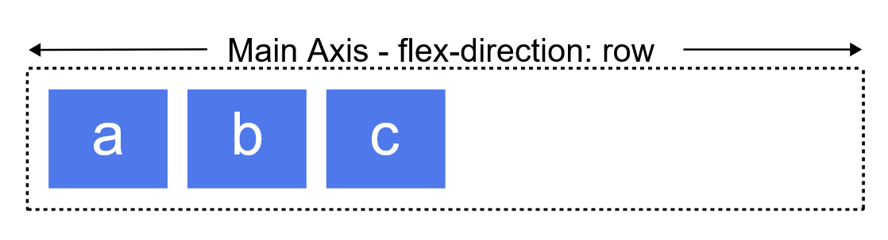

稍微复习 CSS Flex
https://developer.mozilla.org/en-US/docs/Web/CSS/CSS_flexible_box_layout/Basic_concepts_of_flexbox
虽然是按官方文档看，但不追究太多细节，只重实践和模式。
Flex 是这样一种布局模型 Layout Module，它在一个单一维度，即行或者列上去展示元素，这个维度称为主轴 Main Axis，和这个维度垂直的维度称为交叉轴 Cross Axis。如，下面的示例为维度为行、列时的显示的效果。
a supression
there is a struggle
a supression
there is a struggle
注意 Flex 是单维度的布局，它只能控制行或列，交叉轴的存在只是为了在这个方向上控制对齐；Grid 是双维度的布局，同时控制行和列，后面学。
使用 Flex 布局的元素称为 Flex 容器，Flex 容器顶层的子元素称为 Flex 元素，Flex 布局的一个关键特性在于，Flex 容器的子元素能够弹性地选择自己的大小（注意这里是子元素“选择自己的大小”），包括 grow 去填充未使用的空间，以及 shrink 去缩小自己的空间避免超出父元素范围。此外，Flex 布局也允许调整元素在主轴和交叉轴上的对齐。Flex 也足够现代化，支持从右往左的布局，但我不学它。
要让元素成为 Flex 容器，需要指定display为flex或flex-inline，前者元素是 box，后者是 inline-box。
flex-direction指定主轴方向，值可为row, row-reverse, column, column-reverse。


当然，flex 不是真的只能完全以一个方向放置元素，flex 容器可以配置 wrap，从而使得在这一行、列没空间可用是换行、换列。
此外，Flex元素的顺序是可以任意配置的，因而可以不随其在html中出现的顺序；这允许在media query中随意调整元素顺序。
grow，shrink, basis
Flex 元素有三个属性可以配置——
- basis，basis 即元素的初始大小，可以认为，Flex 容器会把所有元素都按初始大小摆放，然后根据容器大小和这些初始大小的差值计算出可用空间，然后通过所有元素的 grow，shrink 属性去计算所有子元素的实际大小，或者说将可用空间分配到这些元素上。注意 basis 未给定或设置为 auto 时，浏览器会根据子元素的内容计算得到 basis
- grow，grow 配置元素如何增长自己的空间；grow 配置的是一个比例，考虑 3 个元素，grow 分别配置为 1，1，2，则前两个元素会得到 1/4 的可用空间，最后一个元素得到 1/2。grow 只在可用空间大于 0 时发挥作用
- shrink，shrink 配置元素如何减少自己的空间；shrink 同样配置的是比例。shrink 只在可用空间小于 0 时发挥作用。shrink 和 grow 相比则有差异——shrink 有一个极限，为容器的 min-content，因此不会是完全的成比例。
对同一个元素（实际上，对这一整行、整列的元素？），同时只会有 grow 或 shrink 发挥作用。
因为这三个属性通常会同时配置，CSS 提供了一个总的属性：flex: <'flex-grow'> <'flex-shrink'> <'flex-basis'> 去同时配置 grow，shrink 和 basis，但也有一些其他语法：
flex: initial：对应flex: 0 1 auto，这个是 flex 元素的初始值，即不 grow，只 shrink，basis 按 content 算flex: auto：flex: 1 1 autoflex: none:flex: 0 0 auto，即不 grow 不 shrink，元素丢掉“弹性”flex: <positive-number>：flex: <positive-number> 1 0
换行，gap
flex-wrap属性配置是否允许 Flex 容器换行，行可以配置反向。一般会同时配置 flex-direction 和 flex-wrap，因此 CSS 提供了flex-flow: <'flex-direction'> <'flex-wrap'>，同时配置方向和换行。
Flex 容器允许使用 row-gap 和 column-gap 控制行间距、列间距，可以认为它们是加到了子元素的 basis 上，或者认为是从 flex 容器的大小上减的……随意吧，反正又不是我实现这个算法。
alignment, justification
元素在交叉轴上的对齐称为 alignment，元素在主轴上的分布称为 justification。假设主轴是 row，则此时 alignment 控制元素的上下对齐，justification 控制的是左右对齐（就像 word 中的左对齐，右对齐，居中对齐等）。控制对齐需要在 Flex 容器上控制，但 Flex 元素能够控制自己在交叉轴上的对齐。
Flex 容器控制控制交叉轴对齐，使用align-items属性。
Flex 元素控制自己在交叉轴上的对齐，使用align-self属性。
Flex 容器控制主轴上的元素的分布，使用justify-content属性。
Flex 容器控制每个主轴（换行时）之间的分布，使用align-content属性。这个操作的客体是每一个主轴，控制的是它们在交叉轴方向上的对齐，因此这里是 align。
you guess what，就这样了，大过年的，后面找个实践的玩意儿玩玩就够了。
本博客所有文章除特别声明外，均采用 CC BY-NC-SA 4.0 协议 ，转载请注明出处！